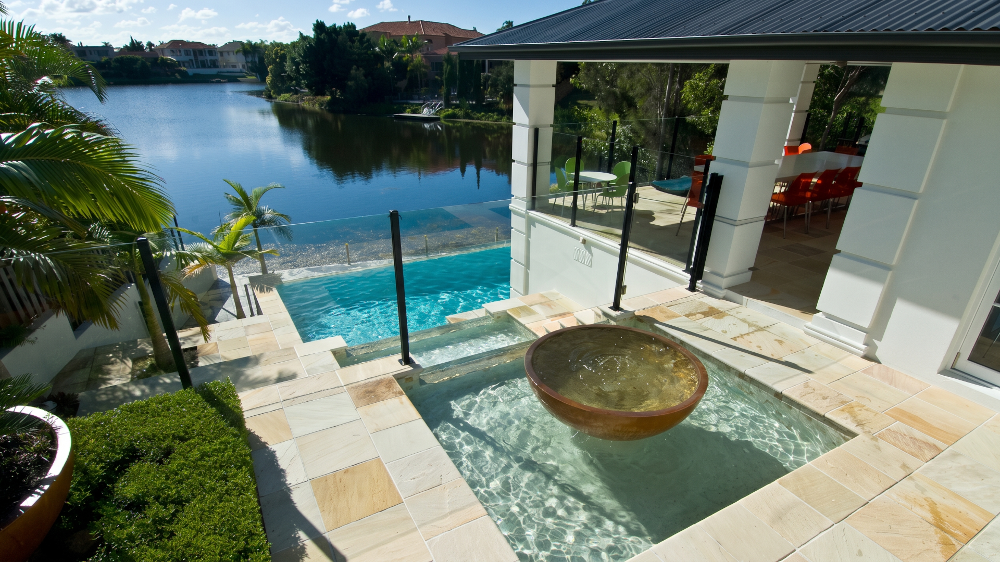

Finishes worth looking closer.
Explore a selection of tiled pools, steps, terraces and details from our original project gallery.
A closer look at the detail.
Twenty-four photographs from the Stile Edge project archive. Select any image to expand it, then explore the collection.